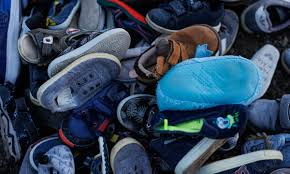
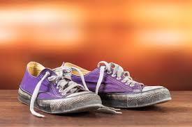
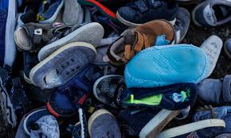
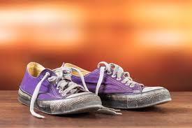

Your Waste Material is Shoes.

 



Shoe waste is a growing problem as millions of old or worn-out shoes end up in landfills every year. Many shoes are made from synthetic materials like rubber and plastic, which take decades to decompose and can release harmful chemicals into the environment. Improper disposal of shoes contributes to waste buildup and pollution.
Recycling or donating old shoes is the best way to reduce waste. Many organizations accept gently used shoes for reuse, while damaged shoes can be recycled into materials for new products like playground surfaces or insulation. Proper disposal helps reduce landfill waste, conserve resources, and support sustainability.
Back To Home Page